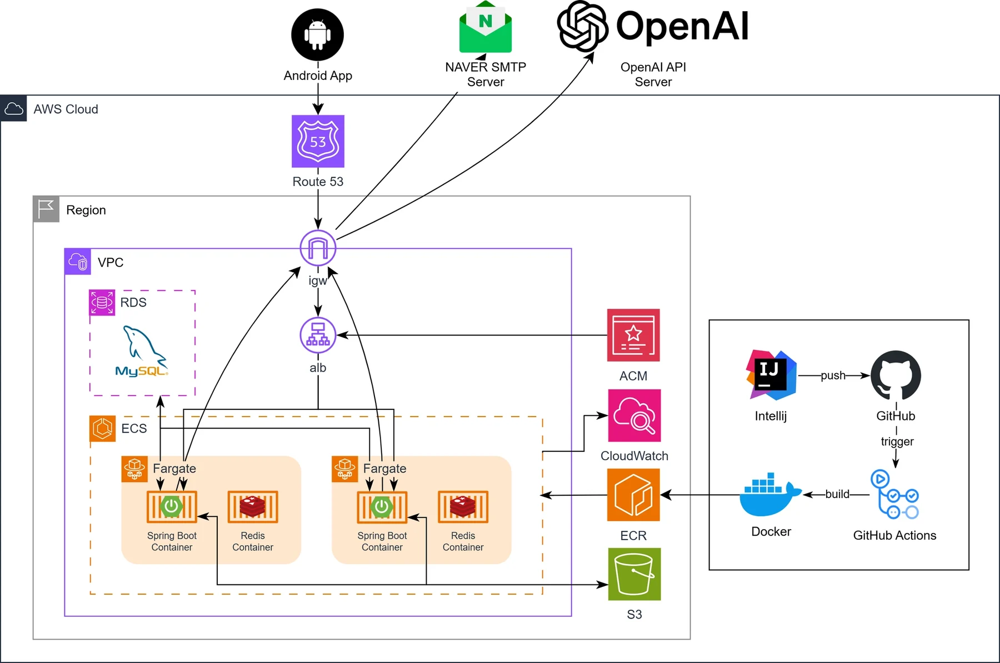

엘릭서: 저속노화 개인 맞춤 식단 관리 서비스
기존 벤치마킹 서비스와 차별화된 기능을 기반으로, 사용자가 꾸준히 저속노화 식단을 수행하도록 돕는 앱 서비스입니다.
- 소속
- 서울여자대학교 소프트웨어융합학과 프로젝트종합설계 I
- 기간
- 2025.03 – 2025.08
- 팀
- 4인 (백엔드 2명, 프론트엔드 2명)
- 사용 대상
- 식단 관리를 위한 동기 부여와 정보 제공이 필요한 저속노화 식단 초보자
- 담당 범위
-
- 인프라 아키텍처 설계 및 배포, CI/CD 자동화
- 백엔드 API · 인증 시스템 구축
- GPT 기반 AI 챗봇 기능 개발 (OpenAI API)
- 성과
- KCI 등재지 논문 게재: 「저속 노화를 위한 맞춤형 식단 관리 모바일 앱의 설계 및 구현」 ↗ (문화기술의 융합, 2025, 11권 6호)
01
AWS 인프라 구성
구성 요소

- 진입점: Android 앱 → Route 53 → Internet Gateway → ALB (ACM 인증서)
- 애플리케이션: ECS(Fargate) 태스크에 Spring Boot 컨테이너와 Redis 컨테이너
- 데이터: RDS(MySQL), S3
- 외부 연동: OpenAI API(챗봇), NAVER SMTP(메일)
- CI/CD: GitHub push → GitHub Actions에서 Docker 이미지 빌드 → ECR → ECS 배포
- 모니터링: CloudWatch
02
트러블슈팅: EC2에서 Fargate로 바꾼 이유
초기 설계
비용을 아끼기 위해 프리티어 EC2 기반으로 ECS를 구성했습니다.
문제
- 태스크 배포 시 리소스 부족으로 PROVISIONING 단계에서 중단 → 롤링 업데이트 불가
- awsvpc 네트워크 모드에서는 태스크 ENI에 퍼블릭 IP가 할당되지 않음 → 서비스 기능상 외부 API 호출이 필수였지만 호출 불가
검토와 판단
- NAT Gateway를 추가하면 외부 API 호출은 가능하지만 네트워크 구성 복잡도와 비용이 함께 증가
- 팀의 시간 자원이 많지 않은 상황
런치 타입을 Fargate로 전환하고, 퍼블릭 서브넷에 두어 퍼블릭 IP 할당을 켜서 외부 호출 해결.
전체 비용은 늘었지만 배포가 안정화되어, 남은 시간 자원을 다른 작업에 투자할 수 있게 됐습니다.